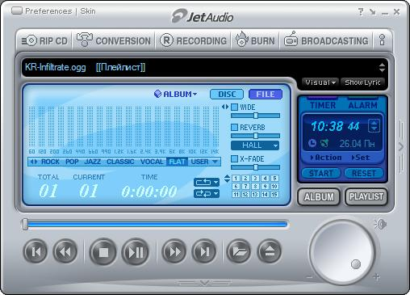

Многие пользователи во всём мире используют MS Windows, MS Office, Adobe Photoshop и другие стандартные решения от гигантов рынка программного обеспечения. Мало кто из них подозревает о том, что существуют более функциональные дешёвые (а чаще бесплатные) решения для конечного пользователя. Просто они менее известны.
Все, наверное, знают об этом текстовом редакторе, прототип которого появился ещё в Windows 3.11. однако его возможности чрезвычайно стеснены. Он не может перекодировать (что весьма важно для кириллических кодировок, которых достаточно много: DOS866, Win1251, Mac, KOI8R и ISO), не обладает подсветкой синтаксиса языков программирования. Отсутствует список последних открытых файлов, а отмена последнего действия однократна. Возможности WordPad'а несколько шире, но и он не блещет функциональностью. Все это склоняет пользователя к использованию альтернативных текстовых редакторов сторонних программистов. Существует множество программ этой области рынка с болле широкими возможностями. Среди них следует отметить SpaceWord XT (
Лицензионная версия Microsoft Office 2003 Professional стоит $365. Для российского пользователя это достаточно большая цена, и, естественно, бесплатное решение для него - большая удача. И такое решение есть - OpenOffice.org. Этот пакет включает в себя несколько программ не менее удобных, чем у конкурента, а иногда, и более хорошо и качественно сделанных. Для MS Word аналогом является OO Writer, для Excel - OO Calc, для PowerPoint - Impress. Интерфейс OpenOffice.org аналогичен интерфейсу MS Office, поэтому сложности при переходе на этот офисный пакет сведены к минимому. Также OpenOffice.org поддерживает форматы DOC, XLS, PPT, то есть форматы MS Office, однако если при переводе файла из одного формата в другой, не стоит сетовать на разработчиков OpenOffice.org, ведь форматы MS Office закрыты для общественности, и “открытый офис” не всегда правильно интерпретирует файлы Office. У автора проблемы возникали лишь с позиционированием картинок, но эту ошибку можно легко исправить. Интерфейс OpenOffice.org русифицирован (кстати среди всех офичных пакетов русифицированы лишь MS Office и OpenOffice.org, а остальные в лучшем случае правильно обрабатывают русские тексты и проверяют их спеллером), в последней версии появилась русская проверка орфографии. К тому же открытый офис существует в версиях для Linux, Solaris, BSD. Для корпоративных пользователей на этом же движке существует StarOffice ($60) производства Sun Microsystems.
Стандартный графический редактор в Windows (MS Paint) не подходит для обработки фотографий. В этой программе нет фильтров для обработки изображения, отсутствует возможность заливки градиентом, мало вариантов кистей. Многие возразят мне: “Но ведь есть Photoshop!”. Это решение от американской фирмы Adobe действительно богато возможностями, но и стоит Adobe Photoshop CS $649. Не каждый человек готов платить такие деньги, когда есть полный аналог Photoshop - GIMP. Эта бесплатная программа пришла из Линукса (Само название GIMP расшифровывается как GNU Image Manipulation Program), сейчас доступна версия 1.2.5. Главное её отличие от Photoshop - многооконность, для неё нет главного окна, и поэтому чтобы вызвать функцию для конкретной картинки, необходимо вызвать контекстое меню для окна данного файла. Оба этих редактора представляют полноценное решение для работы с растровыми изображениями, а их возможности весьма схожи.
Именно из-за этой программы, появившейся ещё в Windows 95 OSR2, разразилось антимонопольное дело против Microsoft. Многие программы, входящие в состав MS Windows используют её ресурсы. Всё бы хорошо, если бы не тот факт, что количество брешей, найденных в IE едва ли не больше, чем во всех остальных компонентах Windows. Именно поэтому многие прибегают к использованию альтернативного решения, а именно к интернет-браузеру Mozilla. Также в состав Мазилы входит чат-клиент, почтовая программа (которая ни в чем не проигрывает Outlook, кроме возможности блокировки спама) и композитор HTML - страниц. Характер уязвимостей, найденных в Mozilla позволяет говорить о том, что пользоваться им практически безопасно. К тому же Mozilla соблюдает все спецификации W3C.
Трудно найти компьютер с операционной системой Windows, на который не был бы установлен медиа-плеер Winamp. Media Player же входит в состав дистрибутива MS Windows. У каждого из них есть свои преимущества и недостатки.Winamp версии 3.0 нестабилен, а за пятую версию приходится платить $15, если хотите получить дополнительные возможности медиацентра. В Media Player эти возможности доступны, но он не может воспроизводить OGG Vorbis. JetAudio и QCD могут составить достойную альтернативу этим двум медиа-плеерам. Возможности Winamp и QCD схожи, а вот о jetAudio следует поговорить отдельно. Это единственный бесплатный представитель медиацентров. Зато, он прелагает нам поверх проигрывания файлов четыре спецэффекта (WIDE, REVERB, X-BASS, SURROUND), семь тембров проигрывания и регуляция высоты воспроизводимых звуков. Также педусмотрена визуализация (до 1280x1024@32). Пять дополнительных возможностей делают его одним из лидеров: аудиограббинг, запись аудио, конвертация (перекодирование), прожиг аудио-CD и даже радиовещание через всемирную паутину. Единственное слабое место в использовании jetAudio - размер в оперативной памяти. Иногда он доходит до 20 Мб.
Надеюсь, что мой обзор поможет Вам остановиться на той или иной программе. В конце концов, уже есть полноценная альтернатива Windows - Lindows на базе Linux. На компьютере автора установленны все приведённые программы и проблем пока не было. Выбор за Вами.
| Разработчики | Sun Microsystems и OpenOffice.org Team |
| Сайт | http://www.openoffice.org/, http://www.altlinux.com/ |
| Операционная система | Windows, Linux, Solaris |
| Цена | Freeware |
| Разработчики | Peter Mattis, Spencer Kimball |
| Сайт | http://www.gimp.org/ |
| Операционная система | Windows, Linux |
| Цена | Freeware |

| Разработчики | JetAudio Inc |
| Сайт | http://www.jetaudio.com/ |
| Операционная система | Windows |
| Цена | Freeware |
| Разработчики | Paul Quinn |
| Сайт | http://www.quinware.org/ |
| Операционная система | Windows, Linux |
| Цена | Freeware |
| Разработчики | Mozilla.org |
| Сайт | http://www.mozilla.org/, http://www.altlinux.com/ |
| Операционная система | Windows, Linux, BSD |
| Цена | Freeware |
| Разработчики | Александр Петровский |
| Сайт | http://x-ware.narod.ru/ |
| Операционная система | Windows |
| Цена | Freeware |